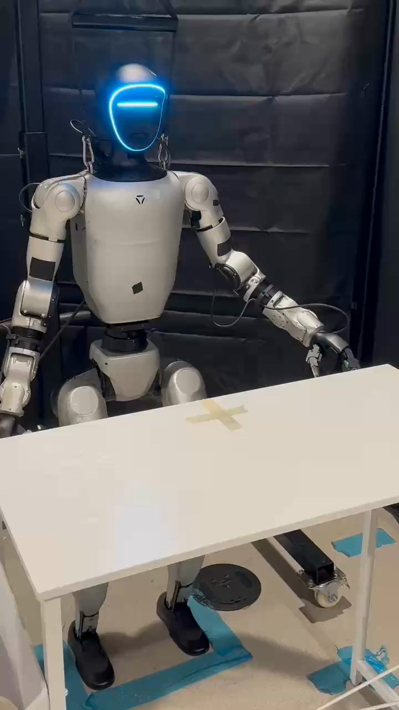

Humanoid Everyday · human-robot-5__handover_dumpling
Handover dumpling

Annotation
From the dedicated visual review of this video (humanoid_action_v1). Plain text · JSON
Observed outcome
The pink dumpling plush rests on the tabletop immediately beside the tape cross, toward the robot left (viewer right). Both robot arms have returned down; the person has withdrawn. The plush was released above the surface and visibly settled after a short drop.
Hand roles
- Left
Receives the toy from the person: reaches above it, encloses it with fingers while the person supports its underside, retains it after the person withdraws, lifts and carries it outward to robot left, lowers and releases it just above the table, then retracts empty.
- Right
Remains down beside the torso throughout; no grasp, support, object transfer or manipulation.
- Person
Introduces the dumpling plush on an open palm from image left and continues supporting it while robot left fingers grasp. Withdraws the supporting hand after the robot has secured the toy.
- Coordination
Human-to-robot transfer with a period of simultaneous human underside support and robot left-hand grasp, followed by human withdrawal. No robot hand-to-hand transfer or robot two-hand coordination.
Robot-side evidence
- Confidence
high
- Evidence
The initial PNG shows the anterior face, chest and both shoulder attachments. The active arm attaches to the robot left shoulder (viewer right), tracks through its elbow/forearm to the hand at viewer right, and subsequently reaches inward to the offered toy. The opposite viewer-left arm attaches to the anatomical right shoulder and stays down. Naming is based on this frontal body anatomy, not screen position alone.
- Uncertainty
None recorded.
Chronology
| Frames | Observation |
|---|---|
| 0–21 | Robot waits with right arm down and left arm extended low; table is empty apart from tape cross. |
| 22–65 | Person brings the round pink dumpling plush into view on an open palm and presents it over the table in front of the robot. |
| 66–207 | Person holds the plush steady on their palm while robot remains largely in its initial pose. |
| 208–369 | Robot raises and bends its anatomical left arm, brings the open hand inward and down over the offered plush; person continues supporting it. |
| 370–454 | Left fingers come around the upper sides of the plush and close while the person supports its bottom. |
| 455–589 | Robot maintains its left-hand grasp; the person continues to hold their palm beneath the toy. |
| 590–605 | Person slides their supporting hand away and out of view; robot retains the plush alone in its left hand just above the table. |
| 606–744 | Robot lifts the plush higher and carries it outward toward its left, keeping it enclosed in its left hand. |
| 745–841 | Robot brings the held plush down toward the tabletop to the viewer-right side of the tape cross. |
| 842–859 | Left fingers open and release the plush slightly above the table. It drops the remaining short distance, makes contact and settles beside the tape cross. |
| 860–1151 | Empty left hand separates from the resting plush, retracts upward/inward and changes orientation; plush stays on the table. |
| 1152–1249 | Left arm lowers back beside the body. Robot ends with both arms down and the plush resting beside the tape cross; person is absent. |
Differences from the publisher annotation
- Original instruction describes handing a dumpling plush to a person. Video shows the opposite transfer direction: the person offers the toy, robot receives it with left hand, then releases it onto the table. No robot-to-person handover occurs.
Uncertainties
- The target toy is absent from initial frame 0 and is introduced by the person during the clip; the prompt identifies the incoming offered object rather than inventing an initially visible target.
- The precise source intention behind the elevated release is not visible; the review records release, short fall and tabletop resting state without inferring whether that release was planned.
Complete review record action_review.json
{
"prompt_protocol": "humanoid_action_v1",
"prompt_provenance": "visually_authored_from_video_and_initial_frame",
"reviewed_contact_sheets": [
"sheet_001.jpg",
"sheet_002.jpg",
"sheet_003.jpg",
"sheet_004.jpg",
"sheet_005.jpg",
"sheet_006.jpg",
"sheet_007.jpg",
"sheet_008.jpg",
"sheet_009.jpg",
"sheet_010.jpg"
],
"inspected_frame_stride": 2,
"inspected_sampled_frame_count": 625,
"initial_scene": "Front-facing humanoid stands behind a white table with a tape cross; anatomical right arm hangs down at image left, left arm extends diagonally down/out at image right. No plush or person is present in source initial PNG. The person subsequently introduces the sole pink round-faced plush from image left.",
"anatomical_side_evidence": {
"confidence": "high",
"evidence": "The initial PNG shows the anterior face, chest and both shoulder attachments. The active arm attaches to the robot left shoulder (viewer right), tracks through its elbow/forearm to the hand at viewer right, and subsequently reaches inward to the offered toy. The opposite viewer-left arm attaches to the anatomical right shoulder and stays down. Naming is based on this frontal body anatomy, not screen position alone.",
"uncertainty": null
},
"arm_hand_roles": {
"left": "Receives the toy from the person: reaches above it, encloses it with fingers while the person supports its underside, retains it after the person withdraws, lifts and carries it outward to robot left, lowers and releases it just above the table, then retracts empty.",
"right": "Remains down beside the torso throughout; no grasp, support, object transfer or manipulation.",
"person": "Introduces the dumpling plush on an open palm from image left and continues supporting it while robot left fingers grasp. Withdraws the supporting hand after the robot has secured the toy.",
"coordination": "Human-to-robot transfer with a period of simultaneous human underside support and robot left-hand grasp, followed by human withdrawal. No robot hand-to-hand transfer or robot two-hand coordination."
},
"observed_sequence": [
{
"start_frame": 0,
"end_frame": 21,
"action": "Robot waits with right arm down and left arm extended low; table is empty apart from tape cross.",
"confidence": "high"
},
{
"start_frame": 22,
"end_frame": 65,
"action": "Person brings the round pink dumpling plush into view on an open palm and presents it over the table in front of the robot.",
"confidence": "high"
},
{
"start_frame": 66,
"end_frame": 207,
"action": "Person holds the plush steady on their palm while robot remains largely in its initial pose.",
"confidence": "high"
},
{
"start_frame": 208,
"end_frame": 369,
"action": "Robot raises and bends its anatomical left arm, brings the open hand inward and down over the offered plush; person continues supporting it.",
"confidence": "high"
},
{
"start_frame": 370,
"end_frame": 454,
"action": "Left fingers come around the upper sides of the plush and close while the person supports its bottom.",
"confidence": "high"
},
{
"start_frame": 455,
"end_frame": 589,
"action": "Robot maintains its left-hand grasp; the person continues to hold their palm beneath the toy.",
"confidence": "high"
},
{
"start_frame": 590,
"end_frame": 605,
"action": "Person slides their supporting hand away and out of view; robot retains the plush alone in its left hand just above the table.",
"confidence": "high"
},
{
"start_frame": 606,
"end_frame": 744,
"action": "Robot lifts the plush higher and carries it outward toward its left, keeping it enclosed in its left hand.",
"confidence": "high"
},
{
"start_frame": 745,
"end_frame": 841,
"action": "Robot brings the held plush down toward the tabletop to the viewer-right side of the tape cross.",
"confidence": "high"
},
{
"start_frame": 842,
"end_frame": 859,
"action": "Left fingers open and release the plush slightly above the table. It drops the remaining short distance, makes contact and settles beside the tape cross.",
"confidence": "high"
},
{
"start_frame": 860,
"end_frame": 1151,
"action": "Empty left hand separates from the resting plush, retracts upward/inward and changes orientation; plush stays on the table.",
"confidence": "high"
},
{
"start_frame": 1152,
"end_frame": 1249,
"action": "Left arm lowers back beside the body. Robot ends with both arms down and the plush resting beside the tape cross; person is absent.",
"confidence": "high"
}
],
"evidence_frame_indices": [
0,
60,
370,
420,
590,
600,
610,
710,
838,
842,
846,
856,
880,
1249
],
"initial_png_inspected_at_native_resolution": true,
"inspection_coverage": {
"contact_sheet_count": 10,
"sampled_frame_indices": "Every second source frame from 0 through 1248 inclusive; 625 sampled frames across all 1250 frames.",
"native_resolution": "720 x 1280",
"native_transition_count": 13,
"source_initial_png_viewed": true,
"final_frame_viewed": 1249
},
"terminal_state": "The pink dumpling plush rests on the tabletop immediately beside the tape cross, toward the robot left (viewer right). Both robot arms have returned down; the person has withdrawn. The plush was released above the surface and visibly settled after a short drop.",
"uncertainties": [
"The target toy is absent from initial frame 0 and is introduced by the person during the clip; the prompt identifies the incoming offered object rather than inventing an initially visible target.",
"The precise source intention behind the elevated release is not visible; the review records release, short fall and tabletop resting state without inferring whether that release was planned."
],
"annotation_discrepancies": [
"Original instruction describes handing a dumpling plush to a person. Video shows the opposite transfer direction: the person offers the toy, robot receives it with left hand, then releases it onto the table. No robot-to-person handover occurs."
],
"selected_execution_status": "success",
"outcome_basis": "Observed human-to-robot receipt and subsequent tabletop release both complete visibly; this success describes the observed action, not fulfillment of the contradicted robot-to-person source caption.",
"video_id": "human-robot-5",
"dataset": "Humanoid_Everyday",
"dedicated_review_agent": "review_he_human_robot_5",
"review_source_video": "Humanoid_Everyday/human-robot-5__handover_dumpling/third_person/original/original.mp4",
"source_frame_count": 1250,
"source_fps": 29.952076677316295,
"native_detail_frames": [
60,
370,
420,
590,
600,
610,
710,
838,
842,
846,
856,
880,
1249
],
"world_model_prompt": "A person presents the pink dumpling plush on an open palm, and the humanoid reaches with its left hand and closes its fingers around the toy. After the person withdraws their supporting hand, the robot lifts the plush, carries it toward its left, and releases it just above the tabletop, where it settles beside the tape cross. The left hand retracts empty while the plush remains on the table. Keep the camera fixed; preserve robot geometry, physically valid joint motion, and normal gripper opening and closing.",
"original_task_instruction": "Handing over a dumpling plush toy to a person with gentle approach and safe transfer, demonstrating soft object handling in human interaction.",
"selected_segment": {
"start_frame": 0,
"end_frame_exclusive": 1250,
"reason": "Complete original single-task reference; no cropping or trimming requested."
},
"source_video_sha256": "175f03c5613d9fed3763515da150ede335356bd125a39395bc7a9fd0f1c406d5",
"review_completed_at": "2026-10-13T17:27:04.214850+00:00"
}